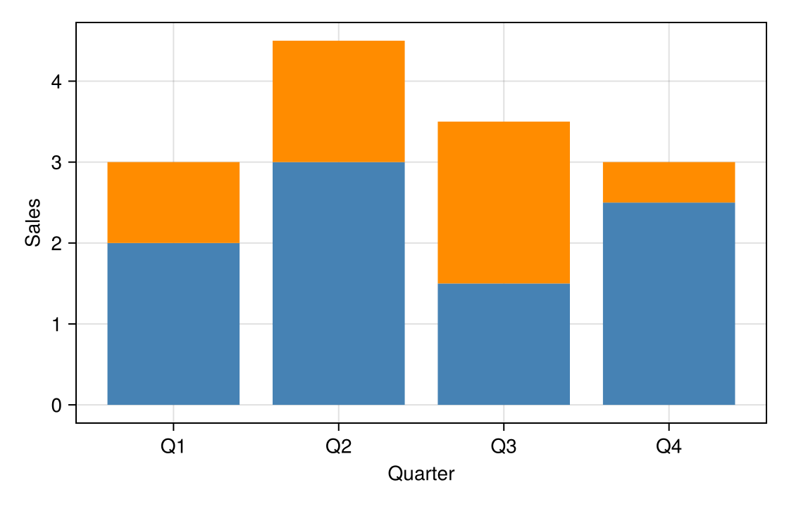
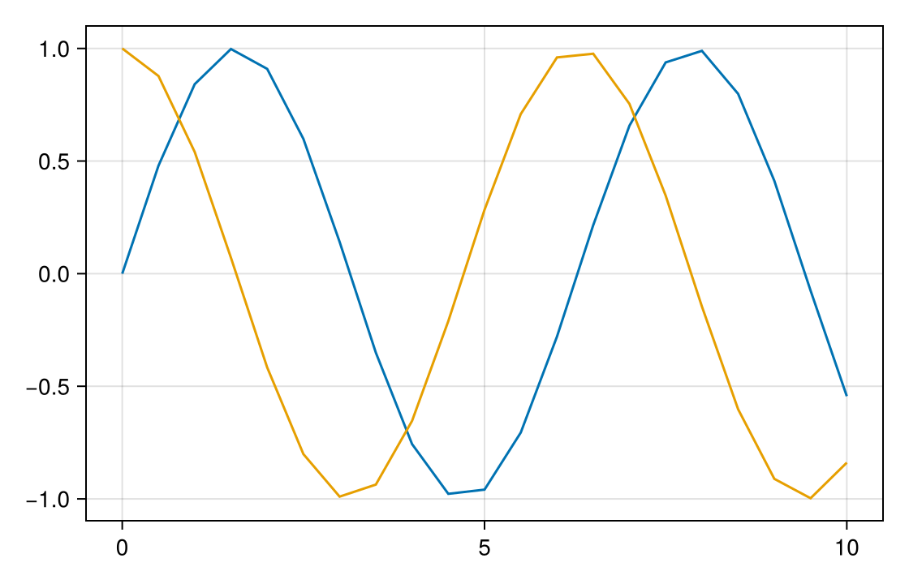

What each mark returns
You can click any plot masque(fig) recognizes, not just scatters. Clicking a point, bar, polygon, or text label sets that plot's field in the @bind value to an ElementEvent, which holds index, the mark's position in your data, and fields that depend on the kind of mark. Heatmap cells, legend entries, and colorbars give their own event types; see How Masque works.
The example on this page passes the plot as bind, so pick is the clicked mark's event itself rather than a named tuple of fields (see What the @bind value holds). Fields each plot reports lists the fields each plot type reports, and Supported plots and axes lists which plots work on which axes.
Bars
A bar reports its value, which is its height, and its low and high ends, so in a stacked or dodged bar plot you can tell which segment was clicked:
Notebook as text
Click any segment of a stack, and the last cell names it.
begin
quarter = [1, 1, 2, 2, 3, 3, 4, 4]
product = [1, 2, 1, 2, 1, 2, 1, 2]
sales = [2.0, 1.0, 3.0, 1.5, 1.5, 2.0, 2.5, 0.5]
products = ["Hardware", "Services"]
fig = Figure(size = (560, 360))
ax = Axis(
fig[1, 1];
xlabel = "Quarter",
ylabel = "Sales",
xticks = (1:4, ["Q1", "Q2", "Q3", "Q4"]),
)
colors = [:steelblue, :darkorange]
b = barplot!(ax, quarter, sales; stack = product, color = colors[product])
nothing
end@bind pick masque(fig; bind = b)
pick.low and pick.high place the segment within its bar, and pick.index is its position in your data.
if isnothing(pick)
"click a segment"
else
"Q$(quarter[pick.index]) $(products[product[pick.index]]): $(pick.low) to $(pick.high)"
endclick a segmentWhat other plots return
A click on any of these plots gives an ElementEvent with index and these fields:
| Plot | Fields |
|---|---|
barplot!, waterfall! | value, low, high |
hist! | value (the bin's height, a count with normalization = :none), low, high |
crossbar! | midpoint, low, high |
poly!, bands, densities, Voronoi cells | index only: the polygon's position in the order you plotted them |
violin! | x, the violin's category |
contourf! | low and high of the level |
hexbin! | x and y, the hexagon's center, and count |
scatter! on a PolarAxis | x is the angle and y the radius, in the order you passed them |
lines!, series!, stairs!, on an Axis or a PolarAxis | the plotted point nearest the click, once the line is in bind (see Lines below) |
Heatmaps have their own page: Heatmaps and images.
A polygon reports only its position, so look up anything else by pick.index, or pass the polygon plot p to interactables with payloads to get it back with the click. Then pick.name is the clicked polygon's name:
regions = interactables(p;
payloads = [(name = "North",), (name = "South",), (name = "East",)],
)
@bind pick masque(fig, regions; bind = p)Lines
Hovering a line shows the point you plotted nearest the pointer (see Tooltips), but a click on it changes nothing, not even the other picks, until you name the line in bind. A click then picks that same point, and a ring marks it. pick.index is the point's position in your data, so xs[pick] reads it, and pick.x and pick.y hold it too. With select = :many, each click adds a point. A line on an Axis3 has no points to pick, so a click there picks the whole line. To read every line at the same x, use a SliceInteractable instead.
When one series! call draws several curves, passing that plot as bind makes them clickable, and pick.line says which curve you clicked. To click lines from separate lines! calls, name each one in bind, and each gets its own field:
Notebook as text
Click near either line to pick its nearest point. Each line keeps its own pick in sel.
begin
fig = Figure(size = (560, 360))
ax = Axis(fig[1, 1])
xs = 0:0.5:10
l1 = lines!(ax, xs, sin.(xs))
l2 = lines!(ax, xs, cos.(xs))
nothing
end@bind sel masque(fig; bind = (sine = l1, cosine = l2))
selThen sel.sine and sel.cosine each hold nothing or the point clicked on that line. The same works for stairs!. A scatterlines! plot's points take clicks without bind, as sel.scatterlines.points, and its line does not. To make a line clickable while keeping every other plot's field, pass interactables(l1) after the figure instead of naming it in bind.
Plots made of separate pieces make each piece its own mark and take clicks without bind: linesegments!, error bars, range bars, hlines!, and vlines!.
Supported plots and axes lists the other plots a PolarAxis supports.